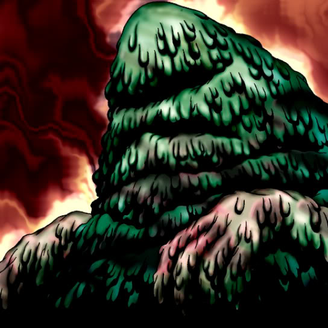

The Thing That Hides in the Mud

STATS
ATK: 1200
DEF: 1300DECK COST
Deck Cost per Card: 25Fusion List (2 Possible Fusions)
- The Thing That Hides in the Mud + Goddess of Whim = Mystical Sand
- The Thing That Hides in the Mud + Oscillo Hero = Minomushi Warrior